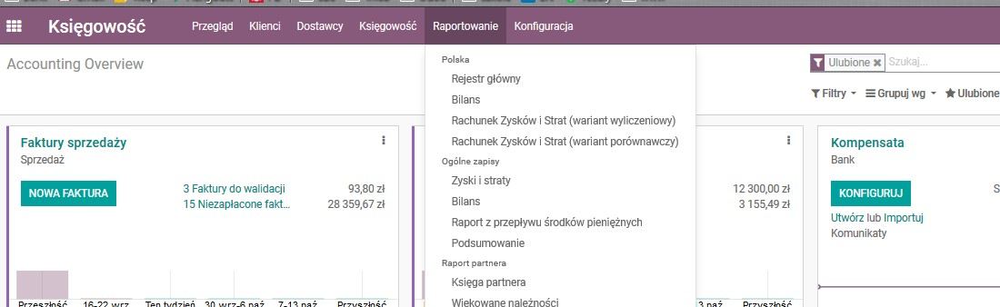
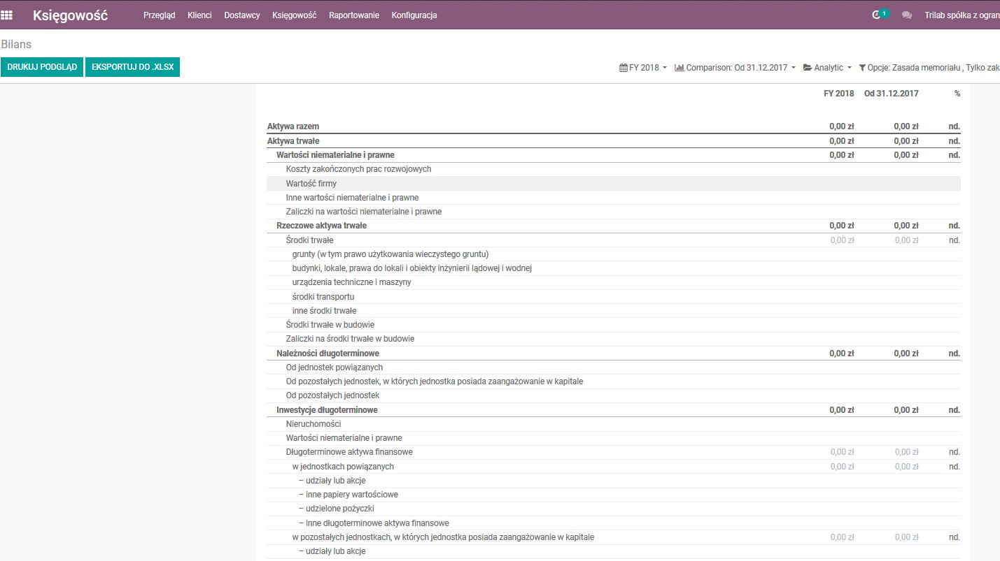

Moduł ze strukturą Bilansu oraz Rachunku Zysków i Strat, definicje zgodne z e-sprawozdaniami.
Po zainstalowaniu trzeba dodatkowo podpiać konta do właścywych pozycji raportów (uzależnione od indywidualnej konfiguracji instancji Odoo / używanego Planu Kont).


Zainteresowanych wspólnym rozwiajniem tej aplikacji (lub innymi tematami z obszaru Polskiej Ksiegowości) zapraszany do kontaktu.
Wspiera wersję 12 Odoo.
English Description:
Module with the structure of Balance Sheet and Profit and Loss Account for polish accounting, definitions in accordance with the e-declarations.
After installation, you must additionally connect accounts with the report positions (depending on the configuration
of the Odoo instance / used Chart Of Accounts).
Contact us if you interested in evolution of this application (or other topics from the area of Polish Accounting).
Supports Odoo version 12.